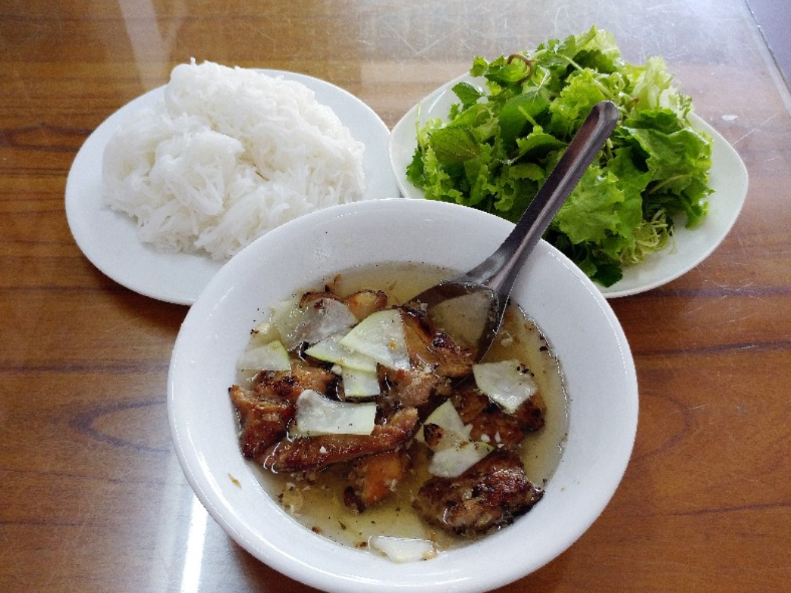
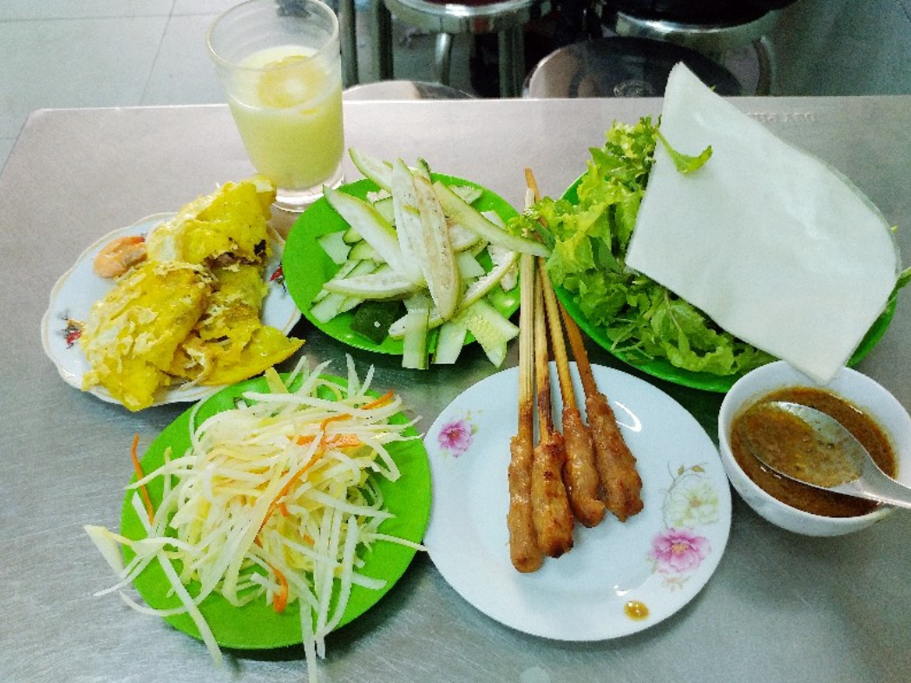

점심시간에만 판매하는 분짜가 인기인 맛집.
새콤한 국물에 노릿하게 구운 돼지고기 바비큐를 넣어 국수, 야채와 함께 먹는다.
10시부터 오후 2시까지만 분짜와 스프링 롤(Bún Nem Hà Nội)을 판매한다.
주말 오전에는 쌀국수도 맛볼 수 있다. 영업시간이 짧고, 메뉴도 단출하지만 현지인, 여행자 모두가 즐겨 찾는 맛집이다.

다낭에서 모르는 현지인들이 없을 정도로 유명한 반쎄오(Bánh xèo), 넴루이(Nem lụi) 맛집. 타지에서도 일부러 찾아와 먹을 정도.
우리나라의 부침개와 비슷한 노란색의 반쎄오를 같이 나온 넴루이(떡갈비 꼬치), 야채와 함께 라이스페이퍼에 싸 먹으면 된다.
어찌 보면 특별할 거 없는 맛이지만 땅콩이 들어간 고소한 특제 소스와 찰떡궁합을 자랑한다.
반쎄오 바융은 골목길 끝에 위치해 있으니 헷갈리지 말고, 골목 끝까지 쭉 걸어 들어가면 나온다.

맛있는 베트남 쌀국수를 맛보고 싶다면 추천하는 맛집.
우리 입맛에 잘 맞는 곳으로 육수와 고명이 모두 훌륭하다. 현지인들 사이에서도 무척 유명한 곳이다.
다른 곳과는 달리 살짝 삶아져 나오는 숙주는 쌀국수의 맛을 두 배로 만들어 준다. 서비스로 별도의 육수도 제공된다.